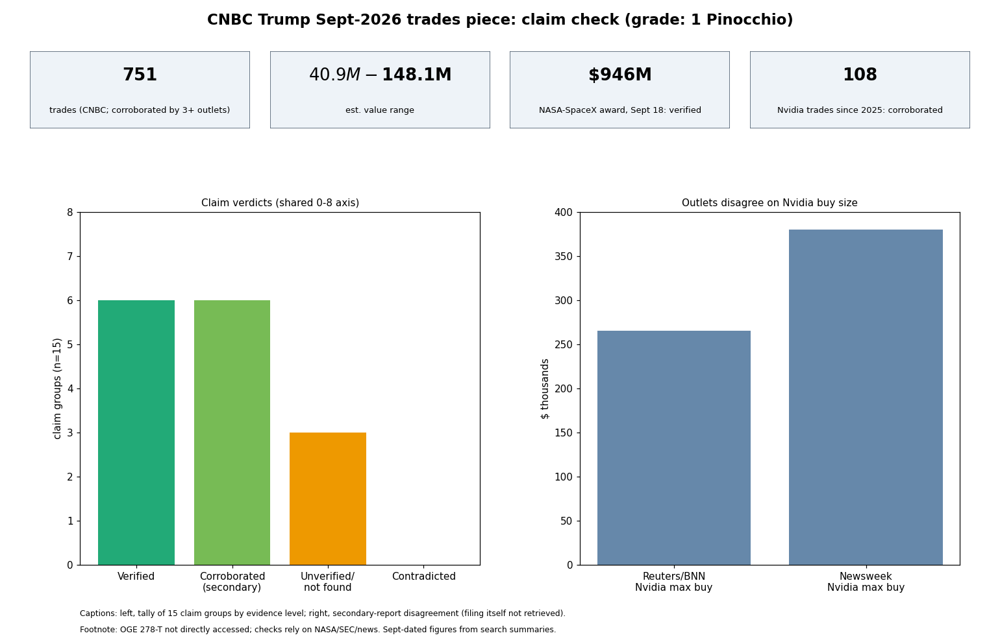

The core claims check out: 751 trades worth an estimated $40.9M-$148.1M, the NASA $946M SpaceX award on Sept 18, Huang at the Sept 24 Xi state dinner, Huang's Nov 11-12 resignation, and the 21,000+ trades in 2025. Not verified: the $32.1M DHS and $10.4M HUD Palantir awards, Karp at a White House AI meeting, and the "roughly 500 trades in the first term" comparison. I found no source for the last one, and the one comparison I did find was 86 stock trades in 2017.
| Claim | Verdict | Source |
|---|---|---|
| 751 trades, $40.9M-$148.1M | Corroborated | Reuters/BNN, PANews, Yahoo |
| NASA $946M SpaceX, Sept 18 | Verified | NASA, Space.com, Reuters |
| Huang at Sept 24 Xi state dinner | Verified | Fortune, Al Jazeera, Irish Times |
| Huang resigned as CEO Nov 12 | Verified (board accepted Nov 11, announced Nov 12) | Nvidia 8-K |
| 21,000+ trades in 2025 | Verified | Bloomberg Law, GMA |
| First term about 500 trades | Unverified. Only 86 stock trades in 2017 found. | IBTimes |
| Palantir $42.5M HUD+DHS awards | Corroborated as CNBC's finding only; award records not found | superpowerdaily |
| Karp at White House AI meeting Sept 29 | Not found | - |
| Aug space transport policy signed | Verified, but it is a memorandum or EO (sources differ) | whitehouse.gov |
| Nvidia 108 trades since 2025 | Corroborated | CoinCodex |
| White House: outside managers decide | Verified as stated (Fortune notes May White House described a trust run by his children) | IBTimes, Fortune |
Confidence: medium. Evidence is secondary reporting, and the OGE filing and USAspending were not queried.